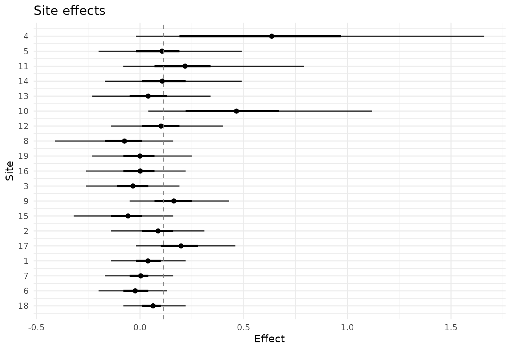
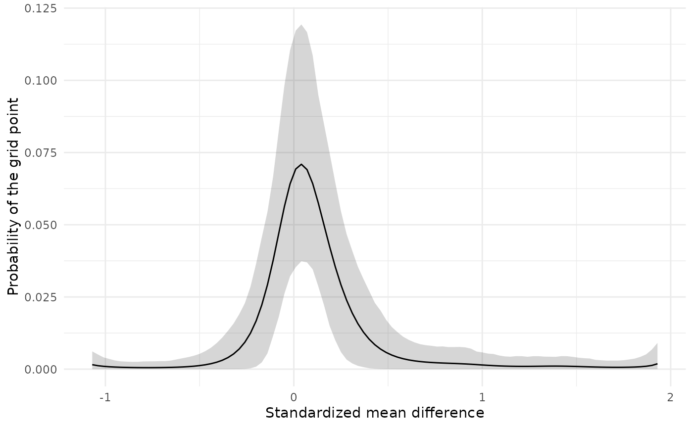
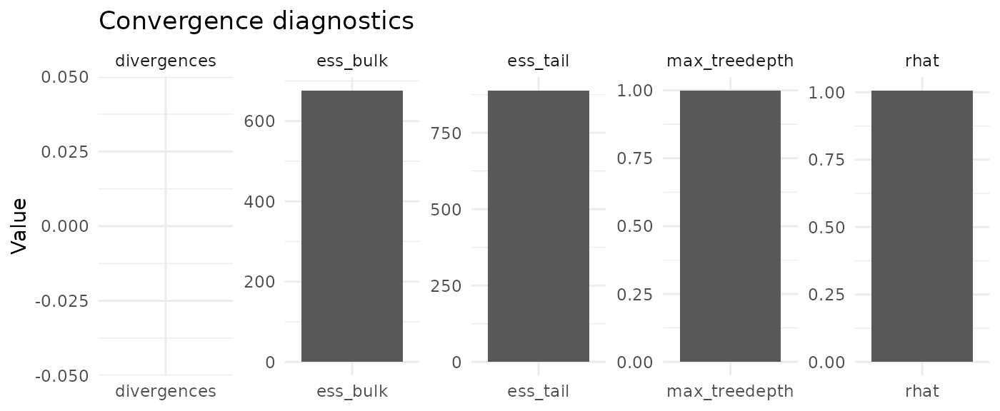

Every number that a fit reports is computed from the draws of a Markov chain, and it describes the posterior distribution only if the chains have reached that distribution and have moved through it often enough. Whether they have cannot be seen from the results themselves: a fit that has not converged prints a table of estimates that looks like any other. The diagnostics are the evidence on that point, and they should be read before the estimates are.
What diagnose() returns
The fit examined here is raudenbush_fit, the model
fitted to the teacher expectancy studies with the default settings.
fit <- raudenbush_fit
diag <- diagnose(fit)
diag
#> <bef_diagnostic>
#> Model family: RE
#> Rhat max: 1.007 (lp__)
#> ESS bulk min: 676.6 (lp__)
#> ESS tail min: 888.8 (lp__)
#> Divergences: 0
#> Max treedepth hits: 1
#> E-BFMI min: 0.2565
#> Runtime: 1.351 sec
#> Warnings: max_treedepth
#> Effective params: mean 10.29; sd 2.84diagnose() collects what bayes_efron_fit()
computed when the model was fitted, and the printed lines give the worst
value of each diagnostic. raudenbush_fit stores one
posterior draw in fifteen, but its diagnostics are those of the full run
of four chains with 3,000 sampling iterations each.
?diagnose lists the elements of the object. Two of them
name the diagnostics that call for attention:
sampler_diagnostics_failed names those that fail a check,
and sampler_diagnostics_warned those that only deserve a
look.
diag$sampler_diagnostics_failed
#> character(0)
diag$sampler_diagnostics_warned
#> [1] "max_treedepth"Reading the diagnostics
The sampler moves through the posterior distribution in a sequence of small steps, whose size it sets during warmup, and each iteration is a path of many steps (Hoffman and Gelman 2014). R-hat and the effective sample sizes describe the draws that result. The other three diagnostics describe the paths.
R-hat compares the chains with one another. If they have all settled
on the same distribution, the variation between chains is no larger than
the variation within them, and R-hat is close to 1. The effective sample
size says how many independent draws the correlated draws of the chains
are worth. The bulk effective sample size concerns the center of the
distribution, and with it the posterior means, whereas the tail
effective sample size concerns the 5% and 95% quantiles, and with them
the intervals. Vehtari et al. (2021) recommend that the draws be
used only if, for every quantity, R-hat is below 1.01 and both effective
sample sizes are at least 400 when four chains are run.
diagnose() lists a warning when a value falls short of
these recommendations. It counts an R-hat above 1.05 as a failed check,
and bayes_efron_fit() then gives a warning as soon as the
fit ends.
A divergent transition means that the sampler met a region of the
posterior distribution that it could not follow with the step size it
had chosen. The draws may then miss part of the distribution, so
diagnose() counts even one divergent transition as a failed
check. An iteration reaches the maximum tree depth when its path is cut
short at the greatest length allowed. That makes the sampler less
efficient, which shows in the effective sample sizes, but it does not
bias the draws, and it is listed as a warning and not as a failure. The
energy Bayesian fraction of missing information (E-BFMI) is computed for
each chain and is low when the chain moves slowly between the high and
the low levels of the log density. diagnose() lists a
warning below 0.2, whereas cmdstanr prints a message of its own below
0.3, so a message can appear for a fit that diagnose() does
not flag.
When a fit has fewer than 400 draws in all, R-hat and the effective
sample sizes are too unreliable to act on. Their values are still
returned, but they are not compared with the thresholds, and the element
diagnostic_skipped says so. Divergent transitions, the
maximum tree depth and E-BFMI are checked however short the run.
reported <- c("mean_g", "sd_g", sprintf("theta_mean[%d]", c(4, 10, 18)))
data.frame(
rhat = round(diag$rhat[reported], 3),
ess_bulk = round(diag$ess_bulk[reported]),
ess_tail = round(diag$ess_tail[reported])
)
#> rhat ess_bulk ess_tail
#> mean_g 1.001 8257 9908
#> sd_g 1.003 1262 1088
#> theta_mean[4] 1.002 2062 1362
#> theta_mean[10] 1.001 2166 1289
#> theta_mean[18] 1.001 11780 6085For the teacher expectancy studies the largest R-hat is 1.007. The
smallest bulk effective sample size, 677, belongs to lp__, the log
density, whereas the quantities that are reported, such as those in the
table, have larger ones. There is no divergent transition. The maximum
tree depth was reached in 1 of the 12,000 iterations, and since the
effective sample sizes are adequate nothing needs to be done about it.
The smallest E-BFMI is 0.26, which lies between the two thresholds:
cmdstanr printed its message when the model was fitted, and
diagnose() lists no warning.
What to do about a warning
The remedies are arguments of bayes_efron_fit().
theta_hat <- raudenbush1985$yi
sigma <- raudenbush1985$sei
# Divergent transitions: smaller steps.
bayes_efron_fit(theta_hat, sigma, adapt_delta = 0.99)
# Iterations that reach the maximum tree depth: allow longer paths.
bayes_efron_fit(theta_hat, sigma, max_treedepth = 12)
# Small effective sample sizes, or R-hat between 1.01 and 1.05: run longer.
bayes_efron_fit(theta_hat, sigma, iter_warmup = 2000, iter_sampling = 6000)These remedies address the sampler. The grid can be a cause as well.
When a large share of the iterations reaches the maximum tree depth, the
grid may be wider than it needs to be. For the simulated data of
vignette("choosing-a-grid") a narrower grid (a smaller
expansion) removed those iterations without changing the
results, and for the fits with 1,500 sites in
vignette("implementation") it brought R-hat below 1.05.
When R-hat is well above 1.05, the specification of the model deserves a look. The simulated data with two separate groups of effects give an example. The table shows three fits of those data: with four spline functions and the default length of run, with four spline functions and a run four times as long, and with six spline functions.
stored <- readRDS(system.file("examples", "grid_comparison_example.rds",
package = "bayesEfron"))
runs <- stored$two_groups_runs
shown <- runs[, c("M", "iter_sampling", "draws", "max_rhat", "min_ess_bulk",
"treedepth_hits", "coverage")]
shown$max_rhat <- round(shown$max_rhat, 2)
shown$min_ess_bulk <- round(shown$min_ess_bulk)
shown
#> M iter_sampling draws max_rhat min_ess_bulk treedepth_hits coverage
#> 1 4 3000 12000 1.09 30 4960 0.925
#> 2 4 12000 48000 1.04 121 18388 0.920
#> 3 6 3000 12000 1.01 731 2182 0.925With four spline functions the default run does not converge: R-hat is 1.09 and the smallest effective sample size is 30 out of 12,000 draws. The run four times as long brings R-hat down to 1.04, but its smallest effective sample size is still only 121 out of 48,000 draws, and 18,388 of its iterations reached the maximum tree depth. The chains move very slowly, and more iterations buy little. With six spline functions the default run converges. Why four functions make the sampler struggle with these data is not established here; the practical point is that the remedy was a different specification and not a longer run.
The last column is the share of the true effects that lie inside the 90% intervals, which can be computed here because the data are simulated. It is nearly the same in the three fits. The diagnostics, then, do not measure how wrong a fit is. They say whether there is evidence that the chains have sampled the posterior distribution, and for the first two fits the evidence is that they have not.
Convergence also becomes harder as the number of sites grows. In the
benchmark that vignette("implementation") describes, which
uses the default sampler settings, none of the 80 fits with up to 500
sites had an R-hat above 1.05, whereas 3 of the 20 fits with 1,500 sites
did.
Plots of a fit
plot() draws four plots, chosen with type.
With ggplot2 installed it returns a ggplot object, which
can be changed like any other; backend = "base" uses base
graphics.
The first two show what the fit estimates.
"caterpillar", the default, shows the posterior mean of
each site effect with an interval of probability level and
the central 50% interval. The sites are in the order of their posterior
means unless sort_by says otherwise: "sigma"
orders them by standard error, which shows how the intervals widen as
the estimates become less precise, and "none" keeps the
order of the data.
plot(fit, type = "caterpillar", sort_by = "sigma", level = 0.95)
"g" shows the estimated distribution of effects, that
is, the posterior mean of the probability of each grid point, with a
pointwise band.
plot(fit, type = "g") +
ggplot2::labs(title = NULL, x = "Standardized mean difference",
y = "Probability of the grid point")
The other two show diagnostics. "diagnostic" draws the
largest R-hat, the smallest bulk and tail effective sample sizes and the
numbers of divergent transitions and of iterations at the maximum tree
depth, the values that diagnose() prints. E-BFMI is not
drawn.
plot(fit, type = "diagnostic")
"loo" shows the Pareto k value of each site from
leave-one-out cross-validation, with reference lines at 0.5 and 0.7. A
large value means that leaving the site out would change the posterior
distribution a good deal, so that the approximation is poor for that
site. Here the values are all small.
vignette("choosing-a-grid") says more about this
criterion.
plot(fit, type = "loo", backend = "base")